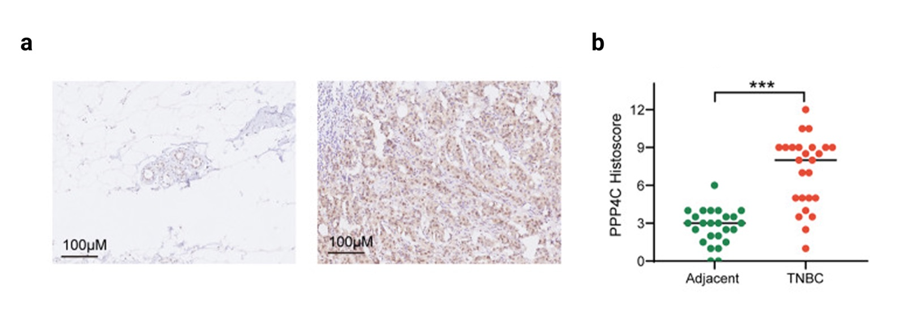

Section 05
Discussion
What the results show, how two published studies of PPP4C compare with them, and where the analysis is weakest.
Interpretation
The analysis tested one gene, chosen in advance, and found four main things. Some are much better supported than others.
A note on figure numbers. The figures on this page come from the two papers discussed below and are numbered 1–4. My own figures are on the Results page, and I refer to them here as Results Figure 1 to Results Figure 5.
PPP4C is higher in breast tumours. This is the strongest result. In Results Figure 1 the tumour box is above the normal box in all five cohorts, across four platforms, with fold changes from +0.56 to +1.34 log₂ units and a rank-aggregated adjusted p of 3.8×10⁻³. Results Figure 2 shows the gap isn't just due to comparing different people. In 109 of 113 TCGA patients with both a tumour and a normal sample, PPP4C is higher in the tumour. The four exceptions change by −0.09 to −0.21 log₂ units, which is within noise.
The increase is seen in every subtype. In Results Figure 4, subtype medians range from 6.48 to 7.27 (0.79 log₂ units), compared with a tumour-vs-normal shift of +1.34 in the same cohort. PPP4C is raised in every subtype, highest in HER2-enriched and lowest in Normal-like, and there's no difference between Luminal A and Basal-like. So the finding applies to breast cancer generally and isn't limited to one type.
PPP4C isn't one of the strongest signals. In Results Figure 3, PPP4C is well inside the significant region but far from the extremes of the 39,393 genes tested, and I never claimed it was an outlier. A gene doesn't need to be one to be worth studying, but it does need to be reproducible, which Results Figures 1 and 2 show.
The link to survival is modest, and borderline after adjustment. The Kaplan–Meier curves in Results Figure 5 separate early and end 5.1 percentage points apart at five years (84.5% vs 79.4%), log-rank p = 0.021, hazard ratio 1.60 (95% CI 1.07–2.39). After adjusting for age, AJCC stage and PAM50 subtype, the hazard ratio is 1.53 (95% CI 1.00–2.35, p = 0.0501), and the confidence interval touches 1. My reading is that PPP4C carries prognostic information that mostly, but not entirely, overlaps with stage and subtype. It needs testing in a second cohort before it could be called an independent marker.
None of these results explain why. Everything on the Results page is an association measured in bulk tissue from tumours that had already developed, so this design can't tell whether PPP4C actually does anything, for example whether removing it changes how breast cancer cells behave. The two published studies below can address that.
Published studies
Two papers are directly relevant. Xie et al. (2022) screened the whole phosphoprotein phosphatase catalytic (PPPCs) family in breast cancer and found that PPP1CA and PPP4C were the two members with real clinical significance [1]. They reached PPP4C through a family-wide screen, while I started with PPP4C as a single pre-registered target, so the two projects got to the same gene independently. Li et al. (2026) then studied PPP4C in thyroid cancer and triple-negative breast cancer, using bioinformatics alongside tissue staining and cell-line experiments [2]. Between them, these papers provide two things my analysis doesn't have: protein-level measurements, and experimental evidence about cause and effect.
Figure 1 — PPP4C knockdown reduces growth and migration
Reproduced from Xie et al. (2022) [1]. Three independent siRNAs against PPP4C in MCF-7 and MDA-MB-468 cells. a–b, knockdown confirmed by qPCR; c–d, confirmed by western blot against GAPDH. e, g, CCK-8 growth over four days. f, h, wound-healing closure at 48 h. Asterisks are the authors' own significance marks.
![Eight panels. Bar charts a and b show relative PPP4C expression falling from 1.0 in control cells to roughly 0.1-0.2 with each of three siRNAs, in MCF-7 and MDA-MB-468. Western blots c and d show the PPP4C band at 35 kDa fainter in all three knockdown lanes, with GAPDH unchanged. Growth curves e and g show control cells reaching an OD of about 2.0 by day 4 while all three knockdowns stay between about 0.85 and 1.3. Wound-healing panels f and h show narrower closure in knockdown cells, with closure dropping from about 48 percent to 14-33 percent in MCF-7 and to about 30-52 percent of control in MDA-MB-468.](assets/img/lit-xie2022-knockdown.jpg)
Not my data. This figure is reproduced from reference [1], published open access under CC BY 4.0. It's shown here for comparison with Results Figures 1–5 and isn't part of my own analysis.
Relevance to Results Figure 1. My cohorts show PPP4C is higher in tumour than normal tissue, but that could mean PPP4C is driving something or that it's just changing along with everything else in the tumour cell. In this experiment the gene is knocked down and the cells slow down. Growth curves separate by day 3 and end about half as high, and wound closure drops with all three siRNAs. Using three independent siRNAs matters, because one siRNA can hit the wrong target, while three giving the same result is much harder to explain as an off-target effect.
Relevance to Results Figure 4. The two cell lines are MCF-7 (ER-positive, luminal) and MDA-MB-468 (triple-negative, basal), and both respond. This fits my PAM50 result, where PPP4C was raised in every subtype.
Figure 2 — PPP4C protein in tumour and nearby tissue
Reproduced from Li et al. (2026) [2]. a, PPP4C immunohistochemistry (antibody staining) in nearby non-tumour breast tissue (left) and triple-negative breast cancer (right), scale bar 100 µm. b, histoscore for every specimen; horizontal bars are medians; *** is the authors' own mark for p < 0.001.

Not my data. Reproduced from reference [2], published open access under CC BY-NC-ND 4.0. Shown for comparison only.
Protein-level evidence. This addresses two obvious objections to Results Figures 1 and 2. First, I only measured messenger RNA (mRNA), and mRNA levels don't always match protein levels. Here the protein itself is stained in tissue, and the median histoscore goes from about 3 in nearby tissue to about 8 in tumour. Second, the design matches Results Figure 2: tumour is compared with nearby non-tumour tissue from the same specimens, so the comparison is within patients.
Difference in cohorts. Their cohort is triple-negative only, while Results Figure 1 includes all breast cancer. What agrees is the direction of the change.
Figure 3 — PPP4C in breast cell lines of four subtypes
Reproduced from Li et al. (2026) [2]. a, PPP4C mRNA relative to MCF-10A, a non-tumorigenic line (it doesn't form tumours). b, PPP4C protein by western blot against tubulin, quantified on the right. c, knockdown validation for the two siRNAs used in Figure 4. Asterisks are the authors' own significance marks.
![Panel a is a bar chart of relative PPP4C mRNA across five cell lines: MCF-10A set at 1.0, MCF7 about 1.3, SK-BR-3 about 1.9, MDA-MB-468 about 2.6 and MDA-MB-231 about 2.4, all marked significant against MCF-10A. Panel b shows a western blot with a faint PPP4C band in MCF-10A and stronger bands in the four cancer lines, quantified as roughly 0.42 for MCF-10A rising to about 0.95. Panel c shows PPP4C bands in MDA-MB-468 and MDA-MB-231 reduced by two siRNAs relative to a scrambled control, quantified to about 0.2-0.6 of control.](assets/img/lit-li2026-celllines.jpg)
Not my data. Reproduced from reference [2]. Shown for comparison only.
Subtype breadth and ordering. Every cancer cell line has more PPP4C than the non-tumorigenic MCF-10A, including the luminal MCF7, the HER2-amplified SK-BR-3 and both triple-negative lines. This matches my finding that PPP4C is raised in all five PAM50 subtypes. The order is different, though. Their two highest lines are triple-negative, while in my 1,083 tumours the highest median was HER2-enriched at 7.27 and Basal-like was in the middle at about 6.9.
I don't see this as a contradiction, because the two can't really be compared. Five immortalised cell lines grown on plastic for decades don't represent subtype proportions in patients. Their data supports PPP4C being raised across subtypes, which matches mine. Which subtype is highest is a question for my cohort, not theirs.
Figure 4 — Effects of PPP4C knockdown on breast cancer cells
Reproduced from Li et al. (2026) [2]. Two siRNAs against PPP4C in MDA-MB-468 and MDA-MB-231. a–b, CCK-8 growth up to 96 h. c–d, colony formation. e–f, transwell migration and invasion, counted per field. Asterisks are the authors' own significance marks.
![Growth curves a and b show control cells reaching an OD450 of about 2.4 and 3.3 at 96 hours while both knockdowns stay well below, separating from 72 hours onward. Colony formation panels c and d show crowded control plates and sparse knockdown plates, with relative clonogenicity falling from 100 percent to about 20 percent in MDA-MB-468 and to about 58 and 12 percent in MDA-MB-231. Transwell panels e and f show dense purple-stained control membranes and sparse knockdown membranes, with migrated and invaded cells per field falling roughly by half in both cell lines.](assets/img/lit-li2026-function.jpg)
Not my data. Reproduced from reference [2]. Shown for comparison only.
Evidence on causation. The first limitation listed below is that association isn't causation, which is a real weakness of any study using patient tissue collected at one time point. In this experiment the order is controlled: PPP4C is removed first, and then growth, colony formation, migration and invasion all drop. In these two cell lines, PPP4C affects the cells' behaviour, and not the other way round.
Link to survival. If PPP4C supports growth and invasion, tumours in my PPP4C-high group would be expected to be more aggressive, which matches a hazard ratio of 1.60. It's a plausible mechanism, but it hasn't been shown. None of this was measured in my patients, and cells moving through a transwell membrane are very different from a tumour spreading in the body.
Limits of the comparison
The four figures above could easily be read as confirming my results, but there are four reasons to be careful.
Overlapping data
Xie et al. used the same public databases I did, including TCGA, so part of the agreement between our expression results comes from analysing overlapping data. Their cell-line experiments and Li et al.'s tissue staining are new evidence, but the database results less so.
No independent survival test
Both papers report worse outcomes with higher PPP4C, and my adjusted hazard ratio of 1.53 has p = 0.0501. Neither paper's survival analysis tests my model on my patients with my covariates, so my result is still borderline.
Cell lines vs tumours
Figures 1, 3 and 4 above use five cell lines grown in culture, with no immune system, stroma or treatment history. They show what PPP4C can do, but not what it's doing in the 1,570 tumours I measured.
Cell of origin
Li et al.'s staining shows PPP4C protein in tumour tissue, which bulk RNA can't show. My own data still can't tell which cells in the sample the signal comes from, and neither paper answers that.
Limitations
These apply regardless of the results.
Association, not causation
Even if PPP4C expression is linked to survival, that doesn't mean it causes it. Expression differences can come from tumour biology, treatment, or the mix of cell types in the sample. The knockdown experiments in Figures 1 and 4 above test causation in cells, but that doesn't carry over to my cohort.
Reliance on TCGA
TCGA-BRCA is a convenience sample with its own recruitment and demographic biases. The GEO cohorts help, but the survival analysis only uses TCGA, and both published studies also rely on the same public data.
Bulk tissue, mixed cells
Bulk RNA-seq averages tumour cells, immune cells and stroma together, so something that looks like a change in tumour cells could actually be a change in the number of immune cells.
Multiple testing and researcher choice
Choosing PPP4C before the analysis avoids most of this problem. The genes reported as correlated with it weren't chosen in advance, though. They're the strongest of twenty thousand tested, so their coefficients will be inflated.
Median splits lose information
Splitting at the median PPP4C value gives a clear Kaplan-Meier plot but a weaker test, so the continuous Cox model is the main analysis.
Incomplete clinical data
Treatment information in the public clinical tables is patchy, so survival differences can't be fully separated from differences in treatment.
Small number of deaths
The survival analysis is based on 99 deaths within five years. This is why the confidence intervals are wide, and supporting literature doesn't change that.
mRNA only
I only measured mRNA. Figure 2 above shows the protein changing the same way in another cohort, which is reassuring, but it isn't a protein-level check of my own samples.
Next steps
- Re-run the survival models with treatment as a covariate where the data allows, since with 99 events and p = 0.0501 an unmeasured confounder could change the result.
- Check PPP4C protein in a public proteomics cohort such as CPTAC-BRCA. Figure 2 only gives a protein-level test for triple-negative disease, so this would extend it to patient tumours in general.
- Estimate cell-type proportions from the bulk expression data (deconvolution) to test whether the PPP4C signal comes from immune cells, which neither published paper settles.
- Add a single-cell dataset to check which cells actually express PPP4C.
- Repeat the tumour-versus-normal and survival analysis in triple-negative tumours alone, so my cohort and Li et al.'s ask the same question about the same disease.
- Test whether the genes co-expressed with PPP4C in my data overlap the WNT signalling, antigen presentation and DNA repair programmes that Xie et al. report for this family [1].
- Check whether PPP4C copy number at 16p11.2, rather than how the gene is regulated, explains the expression differences.
- Pre-register the thresholds and analysis plan before touching any new validation cohort.
References
- Xie W, Sun Y, Zeng Y, Hu L, Zhi J, Ling H, Zheng X, Ruan X, Gao M. Comprehensive analysis of PPPCs family reveals the clinical significance of PPP1CA and PPP4C in breast cancer. Bioengineered. 2022;13(1):190–205. doi:10.1080/21655979.2021.2012316. Source of Figure 1 on this page.
- Li H, Chen Y, Guo G, Luo Q, Lin Q, Xie W, Yan M. PPP4C: a potential molecular marker and therapeutic target in thyroid cancer and triple-negative breast cancer. BMC Cancer. 2026;26:768. doi:10.1186/s12885-026-16083-2. Source of Figures 2–4 on this page.